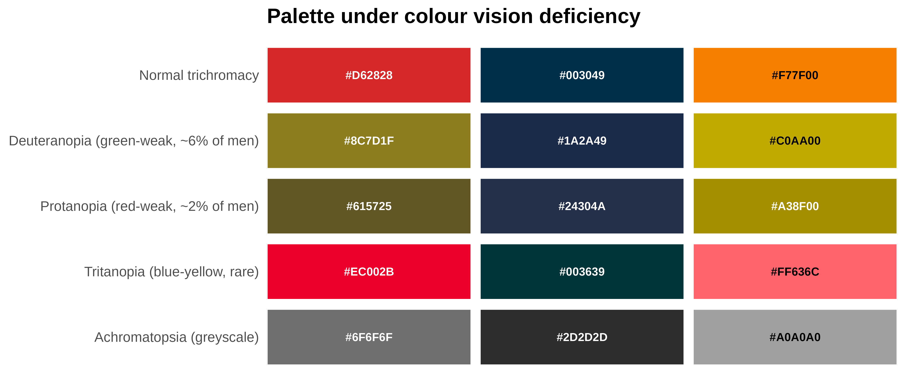
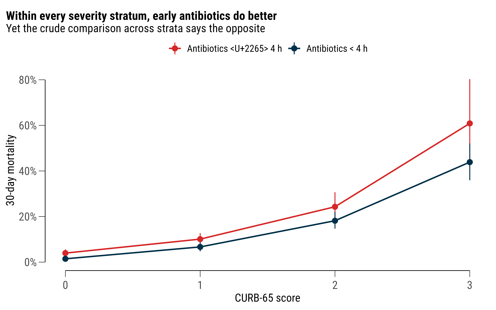
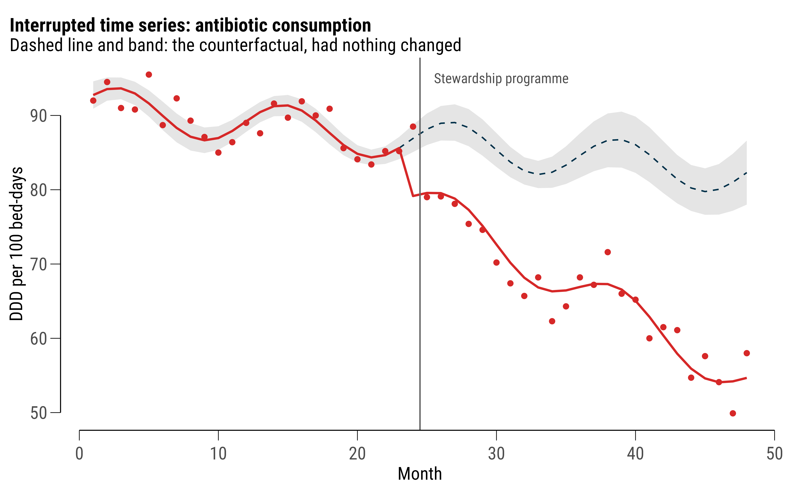
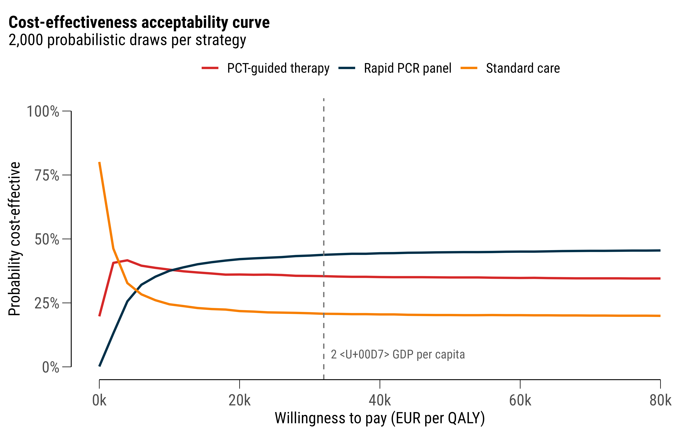

A Package That Argues With You: kkstatfun, One Analysis Start to Finish
One cohort, one deliberately misleading crude estimate, and a worked tour of kkstatfun — from 2×2 tables and colour-blindness audits to targeted causal inference, interrupted time series and cost-effectiveness curves. Then the public-health workflow it sits inside: getting NHIS data out of the system under ЗДОИ, the pipeline that cleans it, where AI actually helps, and how it reaches a manuscript.
R
kkstatfun
epidemiology
causal inference
public health
reproducibility
workflow
Author
Kostadin Kostadinov
Published
August 16, 2026
Modified
August 16, 2026
Every applied statistics package makes a claim about what analysis is. Most claim it is a sequence of tests: you hand over data, you get back a p-value, and the interpretation is left as an exercise. kkstatfun claims something else, and this post tries to demonstrate that claim rather than assert it — that an analysis is a chain of decisions, that most of those decisions should be made once and then reused, and that a good tool makes the uncomfortable ones visible instead of hiding them behind a default.
So this is not a feature list — the reference page already is one. It is a single worked analysis, run end to end, on a dataset built so that the honest answer and the obvious answer point in opposite directions. Every number below was produced by the code shown above it when this page was rendered. Nothing is transcribed.
Then, in §12, the part that actually pays for the package: the public-health workflow it sits inside. How the data gets out of the National Health Information System in the first place, what has to happen to it before an estimate is legitimate, and which parts of that I now hand to a machine.
NoteThe short version
A crude 2×2 table on this cohort says that giving antibiotics within four hours increases 30-day mortality by half. It is wrong, and it is wrong for the most ordinary reason in clinical epidemiology: the sickest patients are treated fastest. Six kkstatfun functions — stratification, Mantel–Haenszel, risk-ratio regression, standardised differences, IPTW and TMLE — each recover the truth from a different direction. The package’s contribution is not any one of those estimators. It is that they all take the same data frame, honour the same group_by(), and return the same shape of tibble, so you can afford to run all six.
1. Setup, and a palette that fails its own audit
The opening lines of every analysis I write are the same four:
#> ✓ Default discrete palette set from 3 anchor colour(s): #D62828, #003049, #F77F00
kk_setup() configures parallel workers and disables scientific notation. set_plot_font() searches your system, then local font files, then Google Fonts, and updates the default ggplot2 theme, so every figure in the session inherits it without a theme() call. set_plot_colors() does the same for the discrete palette: three anchor colours, expanded on demand and installed as the session default.
Three colours I like. But liking a palette is not evidence that it works, and version 1.2.0 added the functions that check:
An empty result would mean the palette passes. This one does not. The three colours stay perceptually distinct under deuteranopia, protanopia, tritanopia and full achromatopsia — the distinct column is TRUE throughout, which is the check most people mean when they say “colour-blind safe”. What fails is a different thing: the orange has a WCAG contrast ratio against white of about 2.6, below the 3.0 needed for graphical objects. On a projector or a photocopy, an orange line on white disappears. An orange area is fine.
kk_show_cvd(c("#D62828", "#003049", "#F77F00"))

Figure 1: The requested palette simulated under four vision types. The categories never collapse into each other — the failure is contrast against the background, not confusability between hues.
I am keeping the palette, because I use those colours for fills and points rather than hairlines, and because I would rather hold a documented exception than pretend the audit passed. Had I wanted the machine to solve it instead, one call builds a palette that is safe by construction:
That is the package’s whole attitude in one function. It did not silently fix my figure, and it did not refuse to run. It told me what was wrong, in units I can act on, and left the decision with me.
2. The data, and why it is synthetic
The cohort below is generated, not downloaded. That is a deliberate choice over a Kaggle dataset, and for one reason: I know the true effect. A real dataset lets you demonstrate that a function runs. A simulated one lets you check whether it is right — every estimator in this post can be scored against a number I put into the data myself.
Three thousand adults admitted with community-acquired pneumonia to eight hospitals, 2018–2024. The exposure is antibiotics within four hours of arrival; the outcome is death within 30 days. The generator has two features that matter. First, the sickest patients are treated fastest — severity raises the probability of early treatment, and it raises mortality independently. That is confounding by indication, and it is not a pathological edge case; it is the default state of every observational treatment comparison in acute medicine. Second, the true causal effect of early treatment is a risk ratio of 0.70, written into the data as log(0.70) in a log-binomial model.
The imbalance is already visible in the curb65 rows. Among patients treated later, 47 % had a CURB-65 of zero; among those treated within four hours, 15 % did. The two columns are not describing the same patients, which is exactly what the rest of this post has to deal with.
3. The estimate that would get published
crude <- cap |>kk_twobytwo(early_abx, death30)crude |>filter(Metric %in%c("Odds Ratio", "Relative Risk", "Risk Difference","Risk in Exposed", "Risk in Unexposed", "NNH")) |>select(Metric, Estimate, Lower, Upper) |>mutate_round(3)
#> # A tibble: 6 × 4
#> Metric Estimate Lower Upper
#> <chr> <dbl> <dbl> <dbl>
#> 1 Odds Ratio 1.61 1.29 2.00
#> 2 Relative Risk 1.52 1.25 1.84
#> 3 Risk Difference 0.052 0.028 0.075
#> 4 Risk in Exposed 0.151 NA NA
#> 5 Risk in Unexposed 0.1 NA NA
#> 6 NNH 19.4 13.3 36.1
There it is. A relative risk of 1.52 (95% CI 1.25–1.84) — early antibiotics associated with a 50 % higher 30-day mortality, comfortably significant, with a number-needed-to-harm of about 19. Written up carelessly, this is a paper. Written up carelessly by someone with a hypothesis, it is a paper with a mechanism section.
Two things about kk_twobytwo() are worth noticing. It returns nineteen quantities, not one — odds ratio, risk ratio, risk difference, attributable and preventable fractions, phi, Yule’s Q and Y, Cohen’s h, excess cases per 1,000, NNH — because the choice between them is yours and the arithmetic should not be a reason to avoid reporting the right one. And it returns them as a tibble, which is why the line above could filter() and select() it like any other data frame, and why §5 can collect this estimate and three others into a single figure without a number being retyped. (kk_risk_plot() will take the whole object and draw a forest plot in one call; I use it while exploring, but it builds its own theme, so the figures below are drawn with kkplot() instead.)
4. group_by() is the whole design
Here is where the package’s core convention earns its keep. Every analysis function honours dplyr::group_by(): pipe in a grouped data frame and the analysis runs once per group, with the grouping columns prefixed to the result. Not a loop, not a lapply() with bind_rows() — the same function call, one verb longer.
Every stratum-specific risk ratio is below one. The crude estimate was above 1.5. This is Simpson’s paradox arriving in a form that will actually turn up in your data, and one added line of dplyr is what exposed it.
The pooled version, with the test for whether pooling was legitimate in the first place:
st <- cap |>kk_stratified_2x2(early_abx, death30, curb65)st$pooled_rr
Mantel–Haenszel pooled risk ratio: 0.69 (95% CI 0.56–0.85). The truth I wrote into the generator was 0.70. Breslow–Day gives no evidence of heterogeneity across strata (p = 0.82), so a single pooled number is a fair summary here — which is a claim the function makes me check rather than assume.
plot_df <- cap |>group_by(curb65, timing) |>summarise(n =n(), deaths =sum(death30), .groups ="drop") |>mutate(risk = deaths / n,lo =qbeta(.025, deaths, n - deaths +1),hi =qbeta(.975, deaths +1, n - deaths)) |>filter(curb65 <=3)kkplot(plot_df, aes(curb65, risk, colour = timing)) +geom_line(linewidth = .8) +geom_pointrange(aes(ymin = lo, ymax = hi), size = .5) +scale_color_kk() +scale_y_continuous(labels =label_percent(1)) +labs(x ="CURB-65 score", y ="30-day mortality", colour =NULL,title ="Within every severity stratum, early antibiotics do better",subtitle ="Yet the crude comparison across strata says the opposite") +theme(legend.position ="top")

Figure 2: The same data twice. Within each severity stratum early treatment does better; pooled across strata it appears to do worse, because severity drives both treatment speed and death.
kkplot() is a drop-in replacement for ggplot() that adds capped axes and, with rangeframe = TRUE, Tufte’s range frame. The font and the palette are already set from §1, so the figure needs no styling code at all — scale_color_kk() and nothing else.
5. Adjusted, weighted, and doubly robust
Stratification handles one confounder. For several at once there are three routes, with different assumptions and, the point, one interface.
Regression, on the right scale. For a common binary outcome the odds ratio overstates the risk ratio, so kk_rr_reg() fits modified Poisson regression with robust standard errors (Zou 2004) and returns risk ratios directly. It runs the univariate models alongside the multivariable one, so confounding is visible as a shift between rows rather than something you have to reconstruct from two printouts:
A standardised mean difference of 0.88 on curb65 — nine times the conventional 0.1 threshold — is the numerical statement of the problem. Then inverse-probability-of-treatment weighting, with stabilised weights and robust confidence intervals:
Double robustness. Targeted maximum likelihood estimation fits both the outcome model and the treatment model and remains consistent if either is right:
The counterfactual risks come back as ey1 and ey0: 10.4 % if everyone had been treated early, 15.3 % if nobody had — an absolute difference of 4.9 percentage points, which kk_nnt() turns into the number a clinician actually wants:
kk_nnt(estimate = tm$ate, type ="risk_diff",ci_low = tm$conf.low, ci_high = tm$conf.high)
Because every one of those functions returned a tibble, collecting them into one figure is a bind_rows() rather than a transcription exercise — and the figure is the argument of this whole post:
Figure 3: Four estimators of the same causal contrast, against the risk ratio of 0.70 written into the data generator. TMLE is not shown because it returns a risk difference; its implied ratio is ey1/ey0 = 0.68.
ImportantWhat the package cannot do
All of §5 assumes I measured the confounders that matter, and in this dataset I did — because I created them. In a real cohort that assumption is untestable, and no amount of double robustness rescues you from a confounder nobody recorded. That is not a limitation of the software; it is a limitation of the design, and the honest move is to say so in the paper. When the treatment was switched on by a rule rather than by a clinician, §8 gets you an estimate that does not need the assumption at all.
6. Diagnostics: validating a marker
Different question, same grammar. Procalcitonin as a marker of bacterial aetiology:
AUC with a DeLong interval, the Youden-optimal cut-off, and the sensitivity, specificity, PPV and NPV at that cut-off, in one row. And because the function is grouped-data-aware, discrimination across severity strata is the same call plus one line:
cap |>group_by(curb65) |>kk_roc(bacterial, pct) |>select(curb65, auc, auc_low, auc_high, n) |>mutate_round(3)
A model is not finished when it discriminates. kk_reg() auto-detects the outcome type and keeps the fitted object attached, so kk_model() hands it back for anything downstream instead of forcing a refit:
And discrimination plus calibration still does not tell you whether using the model helps anyone. Decision-curve analysis asks the clinical question directly — across the range of threshold probabilities at which a clinician would act, does the model beat treating everybody and treating nobody?
Above a threshold of about 10 %, treat-all goes negative and the model does not. That is the sentence a clinical reader needs, and it is not derivable from an AUC.
7. Time to event
kk_survival_plot(cap, time, status, timing) draws the curves, the confidence bands, the log-rank p and a risk table in a single call, and that is what I use while exploring. It is not what I put in a paper. The object it returns is a ggsurvfit composite that carries its own theme, so it ignores the font and palette set in §1, and its risk table has no rules to guide the eye across the row.
For the figure that ships, I rebuild it with kkplot() — which is simply ggplot() with capped axes, already wearing the house font and palette — and stack the risk table underneath with patchwork, with visible rules between the strata:
Figure 4: Kaplan–Meier curves with the risk table built as a second panel: rules between strata, counts coloured to match their curve, one shared axis. Unadjusted, so it carries the same confounding as the crude 2×2.
The log-rank test itself is a separate function, because a figure is not a result:
kk_logrank(cap, time, status, timing) |>select(group, n, observed, expected, oe_ratio, chisq, p_value) |>mutate_round(3)
#> # A tibble: 2 × 7
#> group n observed expected oe_ratio chisq p_value
#> <chr> <dbl> <dbl> <dbl> <dbl> <dbl> <dbl>
#> 1 Antibiotics ≥ 4 h 1617 258 315. 0.819 22.9 0
#> 2 Antibiotics < 4 h 1383 316 259. 1.22 22.9 0
Adjusted hazard ratio for early treatment: 0.73. Note the columns you did not ask for. ph_p is the Schoenfeld test per term and ph_global_p the global one, returned beside the estimate rather than left to a separate cox.zph() call — and here the global test is significant, driven by age. Proportional hazards does not hold, which means the hazard ratio is an average over a changing effect.
The reasonable response is an estimand that does not need the assumption. Restricted mean survival time is the area under the curve to a horizon you choose, in days:
kk_rmst(cap, time, status, timing, tau =90) |>mutate_round(3)
#> # A tibble: 4 × 8
#> group tau rmst se
#> <chr> <dbl> <dbl> <dbl>
#> 1 Antibiotics ≥ 4 h 90 82.5 0.498
#> 2 Antibiotics < 4 h 90 79.3 0.621
#> 3 RMST difference (Antibiotics < 4 h - Antibiotics ≥ 4 h) 90 -3.23 0.796
#> 4 RMST ratio (Antibiotics < 4 h / Antibiotics ≥ 4 h) 90 0.961 NA
#> conf.low conf.high p.value conf.level
#> <dbl> <dbl> <dbl> <dbl>
#> 1 81.6 83.5 NA 0.95
#> 2 78.1 80.5 NA 0.95
#> 3 -4.79 -1.67 0 0.95
#> 4 0.942 0.98 0 0.95
Reported as “on average, X fewer days alive out of 90”, this is both assumption-free and comprehensible to a non-statistician — two properties that rarely travel together. (Unadjusted, it still carries the confounding; the point here is the estimand, not the estimate.)
8. When assignment was a rule, not a judgement
The functions above all need the no-unmeasured-confounding assumption. The quasi-experimental family, new in 1.3.0, does not: when an intervention was switched on by a policy date, an eligibility threshold or a staggered rollout, that rule identifies the effect on its own.
A stewardship programme introduced in month 25 of a 48-month series of antibiotic consumption:
Segmented regression with Newey–West standard errors and a seasonal harmonic, separating the two things a policy can do: an immediate level change of -6.9 DDD per 100 bed-days, and a trend change of -0.83 per month on top of the pre-existing decline. Reporting only the first would badly understate the programme; reporting only their sum would overstate the launch.
The counterfactual series and the cumulative impact come attached as attributes:
cf <-attr(its, "counterfactual")kkplot(cf, aes(time)) +geom_ribbon(aes(ymin = cf.low, ymax = cf.high), fill ="grey80", alpha = .5) +geom_line(aes(y = counterfactual), linetype ="dashed", colour ="#003049") +geom_point(aes(y = observed), colour ="#D62828", size =1.5) +geom_line(aes(y = fitted), colour ="#D62828", linewidth = .8) +geom_vline(xintercept =24.5, colour ="grey40") +annotate("text", x =25.5, y =95, hjust =0, size =3.6, colour ="grey30",family = myfont, label ="Stewardship programme") +labs(x ="Month", y ="DDD per 100 bed-days",title ="Interrupted time series: antibiotic consumption",subtitle ="Dashed line and band: the counterfactual, had nothing changed")

Figure 5: Observed series against the modelled counterfactual — what consumption would have been had the pre-intervention level, trend and seasonality simply continued.
With a control group instead of a single series, the same question becomes difference-in-differences — four hospitals adopting in 2021, four not:
kk_did(panel, resist, treated, post, unit = hospital, time = year) |>select(term, estimate, conf.low, conf.high, p.value, n_clusters) |>mutate_round(3)
#> # A tibble: 1 × 6
#> term estimate conf.low conf.high p.value n_clusters
#> <chr> <dbl> <dbl> <dbl> <dbl> <dbl>
#> 1 did -4.26 -7.27 -1.25 0.012 8
Two-way fixed effects with standard errors clustered on the hospital, recovering the −3.4 percentage-point effect I built in. What makes this family usable rather than merely available is that each function returns its own identifying diagnostic: kk_event_study() for the parallel-trends leads, kk_rd_density() for manipulation at an RD threshold, the first-stage F for an instrument, the placebo distribution for a synthetic control. The assumption and the estimate arrive together, which makes leaving the assumption out of the paper a deliberate act rather than an oversight.
9. Costing it
Suppose the stewardship programme comes with a diagnostic strategy decision. Three options, their costs in euro and their QALYs:
#> # A tibble: 3 × 7
#> strategy cost effect inc_cost inc_effect icer status
#> <chr> <dbl> <dbl> <dbl> <dbl> <dbl> <chr>
#> 1 Standard care 2840 6.4 NA NA NA frontier
#> 2 PCT-guided therapy 3260 6.6 420 0.2 2210. frontier
#> 3 Rapid PCR panel 4510 6.7 1250 0.1 10417. frontier
Strategies ranked by effect, incremental ratios computed against the next-best non-dominated option, and dominance flagged. All three sit on the efficiency frontier here. At a willingness to pay of €32,000 per QALY — roughly twice Bulgarian GDP per capita, the upper end of the WHO-CHOICE convention — net monetary benefit picks the winner:
A point estimate is not a decision, though. With probabilistic draws over cost and effect, the acceptability curve shows how much of that ranking is real and how much is noise:
ce <-kk_ceac(psa, sim, strategy, cost, qaly, wtp =seq(0, 80000, 2000))kkplot(ce, aes(wtp, prob_ce, colour = strategy)) +geom_line(linewidth = .9) +geom_vline(xintercept =32000, linetype ="dashed", colour ="grey45") +annotate("text", x =33000, y = .05, hjust =0, size =3.6, colour ="grey35",family = myfont, label ="2 × GDP per capita") +scale_color_kk() +scale_y_continuous(labels =label_percent(1), limits =c(0, 1)) +scale_x_continuous(labels =label_number(scale =1e-3, suffix ="k")) +labs(x ="Willingness to pay (EUR per QALY)", y ="Probability cost-effective",colour =NULL, title ="Cost-effectiveness acceptability curve",subtitle ="2,000 probabilistic draws per strategy") +theme(legend.position ="top")

Figure 6: Cost-effectiveness acceptability curve from 2,000 probabilistic draws. The optimal strategy is never more than 45 % likely to be optimal — the honest headline.
The rapid panel has the best expected net benefit at €32,000 and is optimal in only about 44 % of draws. Both statements are true, and a decision-maker needs the second one.
10. Everything else, briefly
The same conventions run through parts of the package this cohort has no use for. Sample size for the study I have just pretended to analyse:
And, because most of my data comes out of Bulgarian national systems, the registry helpers: extract_egn_info() parses date of birth, sex, age and birth region out of an EGN; kk_std_rates() and kk_smr() do direct and indirect standardisation; kk_nb_scan() looks for space–time clusters under overdispersion.
11. The philosophy, stated plainly
Having shown it, let me name it. Four commitments, in the order they matter.
Tidy data in, tidy data out. Every function takes a data frame first and returns a tibble. Never a print-only object you have to scrape, never a list of matrices, never a summary() you parse with regular expressions. This is why §5 could collect four estimates from four different estimators into one figure without a number being retyped, and why any result in this post could be written to a CSV and included in a manuscript with no step in between.
group_by() is not decoration. Stratified analysis is the default posture of epidemiology, not an advanced option. When running an analysis by site, by sex or by severity costs one line, you actually do it — and effect modification stops being something you notice at peer review.
Decide once, then reuse. Which confidence-interval method for a rate? Which correction for a sparse cell? Which test when the assumption fails? Each of those was decided once, tested against the worked examples in Rothman, Zar and Sheskin, and frozen in a function. The value is not brevity. It is that my 2023 paper and my 2026 paper used the same method, and a reviewer asking “which one?” gets an answer rather than an archaeology project.
Return the diagnostic beside the estimate.kk_coxph() hands back the Schoenfeld test with the hazard ratio. kk_stratified_2x2() hands back Breslow–Day with the pooled estimate. kk_pal_check() fails my own palette. The design principle is that the check you would rather skip should arrive unrequested, in the same object, so that omitting it from the write-up is a choice you have to make on purpose.
WarningWhat this is not
It is not a replacement for understanding the method. kk_tmle() will happily estimate an average treatment effect from a dataset where the exchangeability assumption is nonsense, and it will do so with a tidy confidence interval and no complaint. Convenience functions lower the cost of doing an analysis, including a bad one. The books remain the load-bearing part; the package is only the part that stops me re-deriving them at midnight.
12. Where this actually gets used: NHIS data
None of the above is hypothetical tooling. The synthetic cohort is a teaching device. The real work is population-level, and the analysis is its last step. A public-health question here — how many people were treated for a condition, where, with what, and what changed after a policy — is answered from the National Health Information System (НЗИС, NHIS): the national e-health infrastructure through which prescriptions, referrals, hospitalisations and immunisations are recorded. It covers the country rather than a sample, and it is where most of my data comes from.
That coverage is also its main analytical hazard. The NHIS records what clinicians entered into it, which is not the same as what happened to patients: completeness differs by module, by year and by how strongly a given field was enforced when the record was made. A count that rises in 2022 may be a rise in disease, a rise in reporting, or a change in what the system required — and you cannot tell which from the file. So the first analysis on any NHIS extract is always the same one: plot the raw counts by month and look for the step change that corresponds to a software release rather than an epidemic.
Where the question is about money rather than activity, the National Health Insurance Fund (НЗОК, NHIF) is the second source: claims under clinical pathways (КП), reimbursed medicines by ATC code, dialysis, dental. The two are not interchangeable. The NHIS records clinical activity; the NHIF records what was paid for. Care that generates no claim exists only in the first, and a claim that was never clinically recorded exists only in the second, so which one you ask decides what your denominator means.
Asking for the data
Very little of either is published in usable form, so the work starts with a written request under the Access to Public Information Act (ЗДОИ). After a fair number of these I would say the request itself is a skill, with rules:
Ask for aggregates, never person-level records. Counts by code, month, district (област), age band and sex. That is not only the lawful form of the request — it removes the institution’s best reason to refuse, because with no personal data there is no data-protection ground for saying no.
Name the fields and the period exactly. “Брой хоспитализации по КП 39 за периода 2019–2024 г., по области и по пол” is answerable by a clerk running a query. “Data on hospitalisations” is answerable only by a meeting.
Say the format in the request. Write .csv or .xlsx explicitly, or the answer arrives as a scan of a printed table and the institution has complied.
Ask for the codelist alongside the data — the version of the МКБ, КП or ATC list in force in each year of the period. Otherwise you will spend a week reconstructing which code was renumbered when.
Pre-empt the small-cell refusal. Propose the suppression rule yourself: cells below five reported as “<5”. It turns a likely refusal into a qualified release.
Keep the reference number and the response date. They become the provenance record in the deposit metadata, and they are what makes the resulting dataset citable rather than anecdotal.
The reply usually arrives inside the statutory two weeks, and it is usually incomplete in some interesting way. That is normal, and it is why the next step exists.
The pipeline
What arrives is never clean. Merged header cells, footer totals rows, comma decimal separators, Cyrillic and Latin mixed inside one column, МКБ codes that Excel has helpfully converted to dates, and a schema that changes between years. So the pipeline is four numbered scripts and one rule:
scripts/01-ingest.R # raw -> tidy, one function per source file
scripts/02-clean.R # validation, deduplication, type resolution
scripts/03-standardise.R # currency, encoding, codelist crosswalks
scripts/04-publish.R # sha256 hashes, metadata, deposit package
The rule is that data/raw/ is never edited. Every correction happens in a script, with a comment saying what was wrong — which means the pipeline can always be re-run from the true origin and “what exactly did you change?” has an answer.
Three conventions do most of the work. Money is stored in both BGN and EUR at the fixed rate of 1.95583, which matters across the 2025–2026 adoption boundary, where a careless join double-converts a column and nobody notices. CSV output is UTF-8 with BOM, so Cyrillic survives the round trip through Excel. And every dataset ships a data-dictionary.csv with one row per column: Bulgarian label, English label, type, unit, codelist, the original Cyrillic field name from the source, and the caveats. The dictionary is the artefact that survives schema drift. The code is comparatively disposable.
Alongside it goes a data-quality-report.md logging, per source file, the rows ingested, the rows surviving, and each irreversible decision. That log is more valuable than perfect code, because it is the only record of judgements that the data itself no longer shows.
The finished product is deposited on Zenodo with a DOI, CC-BY, and a CITATION.cff — which turns a cleaning job into a citable output, and means the next person (often me, two years later) starts from the clean version.
Then, and only then, the analysis
At this point the file is a tidy panel of counts by district, year, age band and code, and everything in §§3–9 applies, with the population-health functions doing the work the clinical ones did above. Rates per person-time with exact Poisson intervals from kk_incidence_rate(). Direct age-standardisation against the European Standard Population with kk_std_rates(), or kk_std_rates_ci() where the counts are sparse enough that the Gamma interval matters. Indirect standardisation and an SMR by district with kk_smr(). Period trends with kk_apc(). The spatial-temporal outlier hunt with kk_nb_scan().
When the question is about a policy — a new reimbursement rule, a pathway price change, a programme rolled out in some districts before others — it is §8 verbatim: kk_its() on the national monthly series, kk_did() or kk_did_staggered() across districts, with kk_event_study() for whether the parallel-trends story survives contact with the pre-period. National data suits those designs unusually well, because the intervention really was switched on by a rule with a date, and the date is in the Държавен вестник.
That is the argument for building the package. The interesting part of a public-health analysis is deciding what to ask for and what the resulting estimate can carry. The part in between should be a function call I have already tested.
Where AI fits, and where it does not
I run this with Claude Code, and what made it useful rather than merely fast is skills: plain Markdown files in ~/.claude/skills/, one per recurring task, each stating the conventions for that task. The data-pipeline skill holds the directory layout, the currency rule, the encoding rule and the data-dictionary schema. kkstatfun-epi says to reach for kk_* functions over epitools or gtsummary, and how they compose. bibliography-management holds the citation rules below. humanizer-bg strips the English calques out of Bulgarian prose, and humanizer-en does the same job in the other direction — this post went through it.
The distinction I would insist on is this: the conventions are written by me, in version control, once. The model applies them. That is a different activity from asking a chatbot how to clean health data. The model is fast at the mechanical middle: parsing a malformed sheet, writing the ingest function for the twelfth source file, drafting the data dictionary from the column names, catching the year the schema changed, putting a ЗДОИ request into the register’s own idiom. It is not the thing deciding whether a join is legitimate or what an estimate means. Every number it produces gets checked against the source, because a fluent wrong answer is the characteristic failure mode and costs nothing to generate.
The small tools around it matter more than they sound. anydoc converts the legacy .doc and .xls files institutions still send; pandoc will silently emit binary garbage for an .xls instead of failing, which is exactly the class of error that ends up in a published table. DBeaver is where I check a join before writing analysis code against it. Local models through Ollama take the bulk mechanical passes — summarising, extracting, first-draft translation — for text that should not leave the machine. And all of it is in Git, because the value of version control here is not collaboration but a record of my own reasoning: the commit that dropped 1,400 rows says why it dropped them.
Writing it up
The manuscript is Quarto, the bibliography is a plain .bib file next to it, and entries are fetched by DOI or PMID rather than typed:
getbib 10.1016/S0140-6736(20)30183-5 33301246getbib-c# audit: duplicate keys, and entries with no abstract
getbib populates the abstract field automatically, and that field is the point. Each entry stores what the source actually found, so when I need support for a claim I search my own bibliography and what comes back is a finding rather than a title. A claim followed by [@key] has to be supported by the abstract recorded in that entry. It is the best guard I have against citing a paper for something it does not say, which fluent drafting makes easier rather than harder. Bulgarian sources — NHIS and NHIF releases, legal acts, NCPHA reports — are not in PubMed and have no abstract to fetch, so I write the findings statement by hand or the entry does not get cited at all.
The rest follows the structure in my writing setup post: numbered scripts produce output/figures/ and output/tables/, the manuscript consumes them, no number is ever transcribed by hand, and 00_run_all.R regenerates everything from the raw files in one command. kkstatfun occupies exactly one layer of that stack — the layer between a cleaned dataset and a defensible estimate. It is a small layer. It is also the one where the mistakes are hardest to see afterwards, which is why it is the one I automated first.
Reproducing this post
Everything here runs from a clean R session with the package installed:
if (!require("devtools")) install.packages("devtools")devtools::install_github("kostadinoff/kkstatfun")
The .qmd source for this page is in the website repository; every figure and every number above was produced when it rendered. If you cite the package, the concept DOI 10.5281/zenodo.18936019 always resolves to the latest release, or run citation("kkstatfun") for the version you actually used.
Written in Quarto, rendered with knitr against R 4.6.0 and kkstatfun 1.3.0. The cohort is synthetic and the hospitals are fictional; the confounding is not. Corrections and disagreements to my inbox.